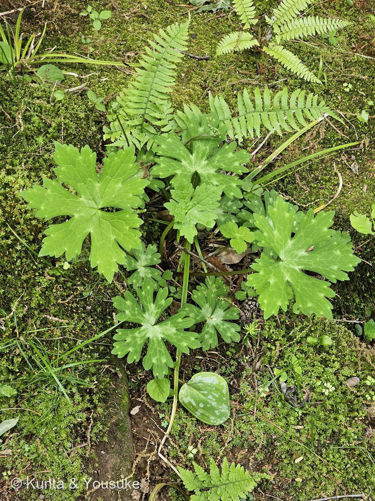

地図を読み込んでいるよ…
🔍 写真も地図も、押しているあいだ拡大して見られるよ（スマホは指を置いてすこし待ってね）。
🌍 の地図＝この子がもともと自生していた場所。──でもこの子は、まだ名前が分からない。名前が分からないと、ふるさとも分からないんだ。だから地図はまっさらのまま、まんなかに「？」を出しておくね。分かったら、ここを塗りに来るよ。
なぞの野草
同定中 — キンポウゲ科（Ranunculaceae）か？
仙台市野草園・ゴールデンウィーク・葉のみ（花なし）
科も未確定
宿題いつか花を見て名前をつける二人の“これから解く謎”
候補（仮説）
- 本命：キンポウゲ科（Ranunculaceae）。掌状に裂ける葉が多く、春の若株は互いによく似る。
- キンポウゲ属（ウマノアシガタ等）＝掌状に一続きで裂ける感じが合う（白斑は普通目立たない）。
- イチリンソウ属＝ニリンソウなど。葉の白いまだら・GW・湿った林床・野草園がよく合う（ただし葉は小葉が分かれ気味）。
- 対抗：フウロソウ科（Geranium）。掌状葉＋淡い斑が出るものもあり、捨てきれない。
確定のしかた（宿題）
- 🌸 花を見るのが一番（黄色くツヤの5弁＝キンポウゲ属／白い萼片＝ニリンソウ等）。花期（GW〜初夏）に同じ場所へ。
- 🏷 仙台市野草園のラベル・植物リストを確認、または園に問い合わせる。
- 🔍 葉が「裂ける」か「小葉に分かれる」か、毛の有無、根の形も決め手。
- ⚠ 安全：この葉のグループにはトリカブト（猛毒）がいて、食べられるニリンソウの若葉とそっくり。名前が確定しない限り絶対に口にしない。観察だけ。
手がかり（観察できたこと）
- 場所：仙台市野草園（宮城・仙台）。時期：ゴールデンウィーク（5月上旬）。
- 姿：手のひら状に5〜7裂した葉、ふちは粗い鋸歯、丸っこい輪郭。葉に白っぽいまだら模様。長い葉柄でロゼット状。湿った苔むした林床（まわりにシダ）。
- 弱点：葉のみ・花がない。春の若い株。→ 種の断定が難しい（「似た葉がたくさん」問題のど真ん中）。